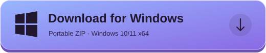

ROBLOX ACCOUNT MANAGER · WINDOWS
Your accounts.
One calm workspace.
Launch, organize and keep an eye on your Roblox sessions. Everything you need, with room to breathe.
Free & open source · Portable ZIP · Windows 10/11 x64

Actual interface. Sample accounts.
TAKE A CLOSER LOOK
Meet your new control room.
A comfortable layout. Useful information. Controls where you expect them.
Your account library and running clients share a home, with separate lists and independent scrolling.
LESS FRICTION. MORE CONTROL.
The details that make a difference.
A clear home for your accounts.
Keep your account library on one side and open sessions on the other. See PID, client version, uptime and memory readings without digging through menus.
- Independent scrolling and account search
- Focus, select and close sessions
- Arrange all, close all and close selected at the top
One destination. Your own sequence.
Choose your accounts, put them in order and launch into a game, a private server or the Roblox home page. Save the places you return to.
- Drag to reorder; cancel remaining launches
- Named links you can edit and reuse
- Reconnect after a crash with destination recovery
Give each account its own budget.
Adjust the visible global CPU slider or save a custom limit for one account, even before launching it. Keep an eye on RAM and VRAM while you play.
- Individual settings inherit the global value
- CPU quotas applied through Windows
- RAM and VRAM monitoring; availability varies
A FEW CLICKS TO GET STARTED
Open it. Add an account. Make room.
- 1
Download & extract
Get the portable ZIP from GitHub Releases and extract it into a folder.
- 2
Open MultiJanela
Run RobloxMultiManager.exe. The .NET runtime is included. Install WebView2 Runtime if it is missing.
- 3
Sign in officially
Choose Add account, sign in on the official Roblox page and complete its security steps. Then finish sign-in.
MAKE YOUR NEXT SESSION SIMPLER
A little more order.
A lot more room.
Your next MultiJanela workspace is one download away.

Windows 10/11, 64-bit · Roblox · Microsoft Edge WebView2
A FEW THINGS WORTH KNOWING
Before you jump in.
Is it free?
Yes. MultiJanela is open source under the MIT license. Downloads come directly from the project's GitHub Releases.
Does it work in Portuguese?
Yes. English is the default. Choose Português (Brasil) in Settings and the app changes language immediately.
Does the CPU limit also limit RAM or VRAM?
No. CPU has a configurable quota. RAM and VRAM are monitoring readouts; the app does not promise a hard VRAM limit.
What if Roblox shows authentication error 403?
Try refreshing sign-in. If the account works directly in Roblox but fails from the website and manager, close Roblox and Studio and use Settings → Repair local Roblox session. This explicit action creates a private backup and preserves your MultiJanela accounts. Other causes of 403 may require Roblox Support.
Where do my accounts stay?
Account metadata and browser profiles stay locally on your PC. Sign-in uses Roblox's official pages. Treat the app's data folder and session backups as private.
Is MultiJanela an official Roblox app?
No. It is an independent project, with no affiliation or endorsement from Roblox. Multi-instance handling and version pinning have compatibility and moderation risks. Read the technical notes and follow Roblox's rules and each game's rules.
Something else on your mind? Open an issue ↗